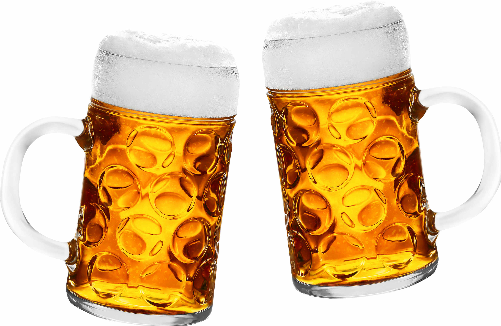

Dhyara
Because You're Worth It!

Regret consuming a glass of beer last night? Not anymore! With a plethora of reasons to fascinate you, this popular alcoholic beverage will never be stereotyped as just another drink to binge on.
Grab your beer glass and indulge in the nutritious drink taking care of your cellular levels pretty well.
Interestingly, beer is one such alcoholic drink that has a lot to offer our bodies than just filling booze into your stomach. Who would believe that a regular party drink can bear such a virtue and be an immunity booster helping you fight with infections and allergies in the most effective manner?
To be precise, moderation is the key to good health. When intake of beer will be in the right quantity, it will surely yield positive results and benefits indeed. So go out and pick a refreshing glass for yourself right away! Add it to your diet and regime for a long, healthy life!

Everybody finds a beer to be a highly refreshing and relaxing drink but most of us wouldn't believe it to be used as a handy alternative for a variety of common household dilemmas. So what are you waiting for?! Let us discuss them right here:
Tip : For shampooing, stick to the traditional beer bottle method rather than going for the commercial beer shampoo products available in the market.
Tip : Avoid this if you are suffering from gastric problem, it might aggravate.
Surprising Uses Of Beer In Life
Regret consuming a glass of beer last night? Not anymore! With a plethora of reasons to fascinate you, this popular alcoholic beverage will never be stereotyped as just another drink to binge on.
USES OF BEER - A Healthy Perspective
The benefits keep on multiplying with passing time. Here are some of the amazing health benefits to make you crave for it even more:
A Happy Heart And A Happy You
Binge on this heart-healthy drink and keep all your worries at bay. After all, a healthy heart resides in a healthy body, don't you agree?Handful Of Vitamins Worth Taking
Though beer can not completely replace multivitamins, but it does provide you with your daily dose of vitamins that are usually present in it such as Niacin, Folate, Vitamins B6 and B12, Riboflavin, Pantothenic acid and more.Grab your beer glass and indulge in the nutritious drink taking care of your cellular levels pretty well.
Give Your Immune System A Boost
A beer a day keeps your susceptibility to diseases away.Interestingly, beer is one such alcoholic drink that has a lot to offer our bodies than just filling booze into your stomach. Who would believe that a regular party drink can bear such a virtue and be an immunity booster helping you fight with infections and allergies in the most effective manner?
A Healthy Option
Beer is good for both heart and brain. Apart from being a beverage of your choice, it also holds many health benefits. Doctors recommend beer for those affected by kidney stones. Not only this, beer has been repeatedly used to prevent as well as improve obesity, Type-II Diabetes, lipid metabolism. It also helps in suppressing atherosclerosis and preventing osteoporosis and carcinogenesis.The Muscle Power
Beer prevents the body muscles from deteriorating. Apart from this, it also reduces muscle soreness and helps in retention of lost fluids to an extent.Instant Stress Buster
aking an adequate quantity of beer provides relief from stress and anxiety. With moderate consumption, one can observe a significant reduction in levels of stress.
To be precise, moderation is the key to good health. When intake of beer will be in the right quantity, it will surely yield positive results and benefits indeed. So go out and pick a refreshing glass for yourself right away! Add it to your diet and regime for a long, healthy life!
Now, apart from the usual ones, there are some really surprising benefits which will make your jaws drop! Let us take a look at a few of them as well.
USES OF BEER - A Bunch Of Surprises
Everybody finds a beer to be a highly refreshing and relaxing drink but most of us wouldn't believe it to be used as a handy alternative for a variety of common household dilemmas. So what are you waiting for?! Let us discuss them right here:
Hair Softener Shampoo
We have come across many interesting uses of beer, most common of all being shampooing. Use it as a regular hair shampoo to give it a bounce before you hit a party.Tip : For shampooing, stick to the traditional beer bottle method rather than going for the commercial beer shampoo products available in the market.
Skin Conditioning, NO Kidding!
For those who are unaware of the soothing nature of beer, here's the trick for you. Using beer as a skin conditioner is not something practiced too often. Though applying it directly on your body wouldn't really help, alternatively, you can simply fill a bathtub full of water and dilute a beer bottle and enjoy a good conditioning session.Marinate Meat And Mushrooms Better
Even the most difficult conundrums can be solved with this simple beverage. Due to its acidic nature and an ideal tinge of taste, beer works as the perfect marinating base replacing buttermilk the world over.Bring back that shine
If your home furniture, copper vessels, or your jewelry need a little polishing, a beer's subtle acidity will help you wash away the layers of dirt and muck and giving a shine to them. So next time you plan to throw it away, think again!Natural Fertilizer For Plants
Though this may sound silly to you, but the beer really is a good fertilizer for your plants. With plenty of oxidants and vital elements, plants obtain a great amount of nourishment. Throwing some left out beer onto the plants will make them healthier naturally due to the presence of yeast in it.Magical Cure For Stomach Aches
An upset stomach can be easily cured with a glass of beer effectively easing the pain in the stomach. It is a natural laxative and has an anesthetic effect eliminating the complications that actually cause pain.Tip : Avoid this if you are suffering from gastric problem, it might aggravate.